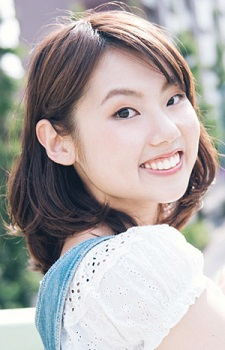

Ami Naito is a Japanese voice actress. She is affiliated with Ken Production.
- Gender: Female
- Birthday: August 8, 1992
- Birthplace: Hokkaido, Japan

|
|---|
|  |
Ami Naito is a Japanese voice actress. She is affiliated with Ken Production.
|
|---|
 |
Jade Ariel | The Ancient Magus' Bride | Jade Ariel is an Ariel and an acquaintance to Chise. She is a bright and confident Ariel, being the leader of a group of Ariel. She is generally cheerful as well as kind and helpful to those she likes. She alwyas speaks her honest opinions. |
 |
Takeshi Nishigori | Yuri!!! on Ice | Takeshi Nishigori is a childhood friend and ex-rinkmate of Yuri Katsuki. He is married to Yuri other friend and have three daughter. He teases Yuri on his weight. He has a laid-back personality and give Yuri practical advice. He used to skate but a fan of the sport. She voiced younger Takeshi Nishigori. |
Go Back to Main Page |
Go Back to Homepage |
|
|
|
OR |
|